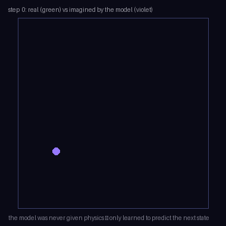

A machine that learns to predict what happens next — so it can imagine, plan, and practise instead of only reacting. What that means, why it matters, and every way robotics and computer vision are building it, drawn live and grounded in the ICRA / IROS / CoRL / RSS and CVPR 2026 corpora.
Five ideas, each a live diagram then plain words — what a world model is, how it compresses the world, how it imagines the future, how you act on that, and the two schools building it. Each has an ‘the actual math’ toggle.
Sutton’s idea: interleave real experience with planning on a learned model — the seed of model-based RL.
Ha & Schmidhuber: a VAE compresses frames, an RNN dreams the future, and a tiny controller is trained inside the dream.
latent imagination matures — learn a compact world model from pixels and master diverse tasks by training the policy in imagination.
the Sora / Genie era — video generators become action-conditioned, interactive simulators you can steer.
driving world models, VLA world models, occupancy forecasting, 3D-splat world models — the families below.
Most learned agents are a reflex: show them the situation, they output a move. That works, but it is blind — the agent cannot ask ‘what would happen if I did this instead?’ before committing.
A world model adds exactly that missing piece. It is a learned answer to one question: given where things are now and what I do, what happens next? Once a system can predict consequences, everything opens up — it can look ahead, weigh options, and even practise entirely inside its own imagination.
That is the whole premise of this page. A world model is a learned simulator of reality, built from data instead of hand-written physics, and the four sections that follow are just how you build one and what you do with it.
A world model learns the environment’s dynamics (and reward): p(sₜ₊₁ | sₜ, aₜ) and r̂(sₜ, aₜ).
A model-free agent learns only a policy π(a|s) by trial and error. A model-based agent learns the dynamics too, then plans or learns against it.
Given the model you can evaluate a plan without acting: expected return J = E[ Σₜ γᵗ r̂(sₜ, aₜ) ] rolled out through p̂.
You could try to predict the future frame-by-frame in raw pixels, but pixels are a terrible place to think. They are huge, and two completely different situations can look nearly identical while a tiny, invisible difference (which way the ball is spinning) decides what happens next.
So the world model first encodes each observation into a small latent state — a handful of numbers meant to capture the true situation, throwing away lighting, texture, and pixel noise. Prediction then happens in this compact space: cheaper, and forced to be about what actually drives the dynamics rather than surface appearance.
This is the single most important design choice in the field, and where the two schools later split: predict in a tidy latent state, or bite the bullet and predict the pixels themselves.
Encode observation oₜ to a latent state: zₜ ~ q(zₜ | oₜ) (an encoder / recognition model).
Predict in latent space: p(zₜ₊₁ | zₜ, aₜ). Optionally decode back to check: ôₜ = d(zₜ).
The Dreamer-style RSSM splits the state into a deterministic path hₜ = f(hₜ₋₁, zₜ₋₁, aₜ₋₁) and a stochastic zₜ ~ p(zₜ | hₜ) — memory plus uncertainty.
Once you can predict one step, you can predict many: feed the predicted next state back in, apply the next action, and roll forward. A few dozen steps of this and you have an entire imagined trajectory — a guess at how the whole episode would play out.
Try a different action sequence and you get a different future. The world model lets the agent branch out and explore dozens of these hypothetical rollouts in parallel, in milliseconds, without taking a single real step — no broken dishes, no crashed drones, no wasted hours.
The catch is that small prediction errors compound over a long rollout, so much of the craft is keeping imagined futures accurate far enough ahead to be useful.
Roll the dynamics forward H steps from zₜ: ẑₜ₊₁, ẑₜ₊₂, …, ẑₜ₊ₕ by iterating p(z₊₁ | z, a) under a chosen action sequence.
Prediction error compounds roughly geometrically with H, so accuracy far ahead is the hard part.
Branch over action sequences to get many candidate futures in parallel — the search space for planning.
Now cash in the imagination. The first way is planning: roll out many candidate action sequences, score each by the reward the model predicts it earns, and execute the first step of the best one — then replan next tick. This is model-predictive control with a learned model.
The second way is learning in imagination (the Dreamer idea): treat the imagined rollouts as free training data and update an ordinary policy on them. The agent gets millions of practice episodes for the cost of GPU time, and only occasionally touches the real world to keep the model honest.
Either way, the payoff is the same: foresight and practice become cheap, which is exactly what real-world robotics is starved for.
Planning (MPC): a⃗* = argmax over action sequences of Σ γᵗ r̂(ẑₖ); solved by sampling (CEM / MPPI), execute step 1, replan.
Learning in imagination (Dreamer): train an actor-critic on imagined rollouts, backpropagating value gradients through the differentiable dynamics.
Real interaction is used only to keep the model calibrated, so sample efficiency can improve by 10–100× over model-free RL.
Everything above leaves one fork open: what exactly does the model predict? Two answers, two research cultures.
Video world models predict the next frame. They are the video-generation lineage (diffusion transformers), and their gift is that the imagined future is a watchable, photoreal video — perfect for generating driving scenarios or training data, at the cost of being heavy and hard to run in a fast control loop. Latent-dynamics models predict the next compact state. You cannot watch the dream, but it is cheap enough to roll hundreds of steps ahead, which is what closed-loop control needs.
The most-quoted insight of the moment is that these are converging: the best video generators are turning out to be implicit world models, and the best world models increasingly learn to generate video as a side effect of understanding dynamics.
Video world model: p(oₜ₊₁ | o≤ₜ, aₜ) — predict pixels directly, usually a diffusion transformer. Photoreal, heavy, watchable.
Latent dynamics: p(zₜ₊₁ | zₜ, aₜ) with a small z — predict state. Cheap to roll far ahead; not directly viewable.
Convergence: video models are implicit world models; latent models often add a decoder to generate video as a check.

Three ways to decide what to do. A world model’s bet: don’t memorise a reflex and don’t hand-write the physics — learn the dynamics from data, then plan and practise against them.
| How it decides | Needs | Foresight | Best when | |
|---|---|---|---|---|
| Model-free RL | a reflex policy, learned by trial and error | huge real (or sim) interaction | none — it only reacts | a fast, cheap simulator already exists |
| Classical planner | searches a hand-written model of the dynamics | an accurate model, written by you | perfect — if the model is right | dynamics are known and clean |
| World model (learned) | learns the model from data, then plans / imagines on it | data to learn the model | as good as the learned model | real, messy dynamics you can't hand-write |
Every family below is chasing one or more of these — the recurring reasons robotics and vision reach for a world model, in the words the papers keep using.
Once the model exists, the agent practises on imagined rollouts for the price of GPU time. Papers cite cutting real-robot data from 5 hours to 1.5, or learning a gait from 3 minutes of real data.
Roll out candidate actions and pick the best before committing — model-predictive control with a learned model, even over ‘infinite’ horizons for legged robots.
Rehearse dangerous situations in the dream. Safety filters ‘play out’ hypothetical adversaries; anomaly detectors flag when the real world diverges from what the model expected.
A model of dynamics transfers where a memorised policy won’t — across objects, embodiments, and sim→real, because it learned how the world works, not one reflex.
The same learned model serves planning, policy training, data generation, and anomaly detection — and, when it predicts pixels, doubles as a photoreal simulator.
Fifteen families, each with the big-picture problem, the approaches, and real papers — robotics (ICRA/IROS/CoRL/RSS), vision (CVPR 2026), and the growing overlap. Jump to any:
Reinforcement learning is brutally data-hungry — a robot might need millions of trials to learn a skill, and every trial happens on real, breakable hardware in real, slow time. You simply cannot afford that many real attempts.
The purest form: encode pixels to a latent state, learn the dynamics in that space, and train the whole policy inside imagined rollouts — touching the real robot only to keep the model honest. The prize is sample efficiency, which is what real hardware is starved for.
The 2024–25 work pushes it onto real bodies and hard settings: legged locomotion, sparse rewards from pixels, and estimating hidden physics (mass, friction) so the dream matches reality.
You have a decent model of how things will unfold, but the situation keeps changing under you. You need to decide what to do right now, act, and then reconsider the instant the world moves — not commit to a long plan blindly and hope.
Instead of training a policy, keep the model and search: at every tick, roll many action sequences through the learned dynamics, score them, execute the best first step, and replan. This is model-predictive control with a neural (or physics-plus-residual) model.
The recurring worry is the model wandering outside what it was trained on, so several papers bolt on novelty or uncertainty checks that veto risky imagined actions.
The richest thing a camera gives you is video, and the vision field already has models that generate stunning video. The question: can that generator double as a simulator — showing you what the world would look like a second from now if you did X?
The vision lineage attacks the same problem from pixels: a video diffusion model, conditioned on an action or a prompt, generates the next frames — a watchable, photoreal simulation of the future. The insight driving the field is that a good enough video generator is a world model.
Because the models are enormous, much of the work is making them fast and long enough to be usable — linearised attention, caching, and structured attention to cut the quadratic cost.
A generated video you can only watch is a movie, not a simulator. To plan or play inside it, you have to be able to steer it — say what should happen, and have the generated future obey.
A simulator you can’t steer is just a movie. This family makes the generated future controllable — per-object trajectories, camera moves, forces, or an agent’s actions all become inputs the model obeys, turning video generation into something you can play like a game.
The control signal ranges from language and points to explicit physics overlays, all mapped to what the model should render next.
A self-driving car must answer, continuously: where will everything be a few seconds from now? Not just where things are, but where the space around the car will be free to drive.
Self-driving wants to ask ‘what will the street do next?’ — so it learns a world model of the scene and rolls it forward, either as future occupancy (what space is filled, over time) or as generated future video the planner can react to.
The strong versions decouple forecasting (how the scene evolves) from rendering (what it looks like), and increasingly fuse language so you can prompt scenarios.
Most manipulation isn’t rigid — cloth folds, cables tangle, piles shift. To plan a fold or a pack, the robot must predict how the soft stuff itself will move under its action, not just where its own gripper goes.
To plan a manipulation, a robot needs to predict how the stuff moves — a pushed pile, a folded cloth, a packed box. These world models learn object/particle dynamics from vision (and touch), then roll them out for planning.
Graph and particle representations dominate because they capture contact and deformation that a single latent vector blurs away.
A world model needs both to look right (so it matches the camera) and to move right (so it obeys physics). Keeping those two in sync — a photoreal renderer and a predictive physics model of the same scene — is the hard part.
If a world model needs geometry and appearance, a Gaussian splat is a natural body for it: predict how the blobs move, then render them to check against what the camera sees. The splat is simultaneously the state, the renderer, and the collision geometry.
This is the seam where the Gaussian-splatting work and world models meet — several papers couple splats to physics particles or to a learned dynamics head.
Predicting photoreal future frames is gorgeous but expensive — far too slow to roll out thousands of times for planning. But do you even need pixels to decide what to do? Usually you need the gist, not the picture.
Photoreal futures are overkill for deciding what to do next. This family compresses the world to the bare minimum — a handful of discrete tokens, a 3D trace, an optical-flow field — and predicts that, trading appearance for speed and cross-embodiment transfer.
The bet: for control, semantics and geometry matter far more than pixels, and a tiny state rolls far ahead almost for free.
A learned model can generate a future that looks perfectly convincing yet is physically impossible — objects passing through each other, a ball that speeds up on its own. Convincing is not the same as correct.
A learned model can generate futures that look right but break physics — objects that pass through each other, fluids that gain energy. This family bakes physical law back in, either as a constraint in the loss or by putting a real simulator in the generation loop.
The result is prediction that respects conservation and contact, which is what makes it trustworthy for control.
Roll a world model far enough and it forgets: the room quietly changes, colors drift, details flicker, or the whole thing collapses into a frozen frame. Staying coherent over long horizons is its own hard problem.
A world model is only useful if it stays coherent over time — the same room when you look back, no drift, no flicker. Rolling far into the future without collapsing is a hard, distinct problem.
Solutions add memory, hierarchical coarse-to-fine generation, and attention tricks that keep long rollouts stable for seconds to hours.
A single blob of latent state smears many objects together, so it generalizes badly — rearrange the objects and it is lost. But the world is made of things that interact by shared rules.
Instead of one monolithic state, factor the scene into objects and learn how they interact. A graph of objects-and-relations predicts the next state and generalises to arrangements never seen, because the rules of interaction are shared.
This is how world models reach long-horizon, multi-object tasks that a flat latent can’t hold.
Vision-language-action policies are powerful but hungry for demonstrations, and every real demo is slow and expensive to collect. Where does all that practice come from?
The hottest seam: use a world model to train or supervise a vision-language-action policy. Generate the practice, imagine the consequences, and compute rewards from imagined success — often with a handful of real demos or none.
The world model becomes the safe, cheap post-training ground for foundation-model robot policies.
A learned model is only trusted where its training data went. The moment reality does something the model never saw, blindly following it is dangerous — so the model has to know when it is out of its depth.
A model that knows what should happen can flag when reality diverges — and rehearse danger before it’s real. This family uses world models for run-time safety: predict, compare, and veto or recover.
It also quantifies its own uncertainty, so planning can stay conservative exactly where the model is unsure.
Hand-built simulators are fast but wrong in the details that matter, so policies trained in them break on the real robot. What if you learned the simulator from reality instead?
Rather than trust a hand-built simulator, learn one from data — then train in it and deploy for real. The learned simulator captures the messy dynamics a physics engine misses, closing the sim-to-real gap from the sim side.
The strongest results learn the model from tiny amounts of real data, or denoise the gap between dream and reality.
As world models multiply, a hard question grows: is this one actually a good simulator, or just a pretty video generator? Rendering beautifully and predicting correctly are not the same thing.
As world models proliferate, telling a good one from a plausible-looking one becomes its own problem. Do they respect geometry, physics, and causality — or just paint convincing frames? This family builds the benchmarks that ask.
The recurring finding is sobering: many models that render beautifully fail the moment you perturb the action or check causality.
ROBO ICRA/IROS 2025 · CoRL/RSS 2024 CVPR CVPR 2026 BOTH the seam — titles are real, from the analyzed corpora.
World models are the fastest-moving idea in embodied AI right now. What is still hard: